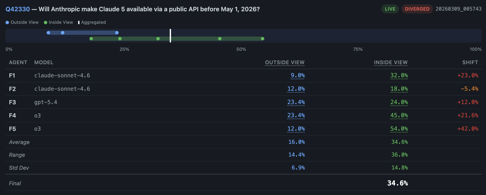
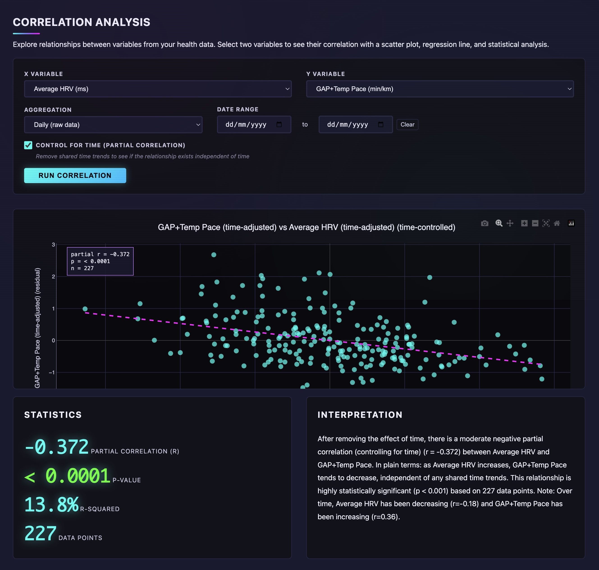

Product team leader and practitioner with over 15 years of experience at every stage, from seed to Fortune 50. Passionate about fostering environments that give people the freedom to experiment, learn, and grow together. Certified Superforecaster.
I am enjoying a long-planned sabbatical which commenced after the acquisition of my last employer. I'm using this time to pursue a mix of personal and professional interests.
I am open to employment and consulting offers, whether remote or including relocation.
Great products are built by great teams: people from different backgrounds with broad experiences, skill sets, and deep customer knowledge.
They are the product of trial, error, intuition, and some luck. They are grounded in profound understanding of people's needs and wants.
They are the accumulation of rigorous decisions, informed by data but made by people closest to the user. They require craft and meticulous editing.
They deliver radical improvements over the status quo because the teams that build them are willing—and able—to go back to first principles.
I'm a product manager with over fifteen years of experience. I have worked with the earliest stage startups up to the largest global organizations and have been fortunate enough to see a couple exits (both acquisition and IPO). Most recently, I worked at VMware's Tanzu (formerly Pivotal) Labs, helping customers across Europe, the Middle East, and Africa adopt our PaaS products and lean product development practices to ship better software at enterprise scale.
For most of the past decade I've built and managed teams of other PMs, engineers, designers, and solution architects. I derive the most satisfaction professionally from coaching and mentoring, helping people find the true source of their talent and get the most out of it.
I'm interested in using software to make people's lives more fulfilling and their choices more meaningful. I want to help get people off their devices and more fully into the world. I want to create software that people value enough to pay for with their money, not merely with their attention or personal data.
I enjoy the craft of software because doing it well takes a team of people of different skills and perspectives. I relish the difficulty of building things that are powerful yet intuitive. Software challenges are fundamentally human challenges: understanding the needs of others, making and committing to decisions, learning and adapting, taking responsibility for the consequences of your actions. I’ve spent most of my career trying to get better at these things, and teaching others to do the same.
You can find my full resume here.

Fully autonomous AI-powered forecasting system that competes in Metaculus prediction tournaments. Hand-built proprietary methodology to decompose questions, identify key uncertainties and reference classes, conduct agentic ReAct + RAG search. Research findings are passed to an ensemble of frontier LLMs (Claude, GPT, o3) with a two-stage prediction methodology: an "outside view" analyzing historical base rates and analogies, followed by an "inside view" incorporating current news and events. The ensemble uses cross-pollination (agents receive each other's outside-view analyses) to maximize diversity, with an optional supervisor agent that intervenes when forecasters disagree significantly.
Currently beating the crowd of other forecasting bots in ~75% of questions.
"What should I build next?" "Did the last thing I shipped work?" In the age of coding agents, these are still the hardest problems in software. Vibeloupe is a test-measure-learn iterative workflow built natively into Claude Code or Cursor that helps you track experiments, validate hypotheses, capture learnings, and iterate your way to product success. It's a tool for product builders who understand: learning fast >>> shipping fast.

Personal data analytics project to assess the impact of my training and nutrition program on key health markers. Aggregates fitness and health data from multiple sources—Strava running/cycling activities, Oura Ring biometrics, and weight + gym tracking—for analysis in Jupyter notebooks with a Flask web dashboard with Chart.js visualizations. Uses multiple linear regression to model running efficiency and strength over time while controlling for confounding variables—including body weight, ambient temperature, elevation gain, and training volume—to isolate the true effect of fitness progression.
Features a modular ETL pipeline that fetches data via OAuth-authenticated APIs, and transforms it into normalized datasets for analysis. Key metrics include Grade-Adjusted Pace (GAP) calculations, efficiency factors, training load estimates, cardiovascular and health trends.